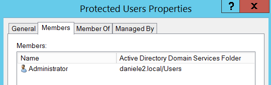
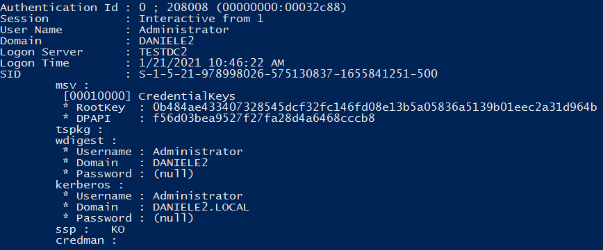

Mimikatz on Protected and Non-Protected Users
Now we will check the difference of output informations from mimikatz between a Non-Protected Users and a Protected Users.
As we will see with Protected Users Kerberos keys are no longer stored in LSASS memory
mimikatz# privilege::debug
mimikatz# sekurlsa::logonpasswords
To check the difference Log-off and rerun Mimikatz
